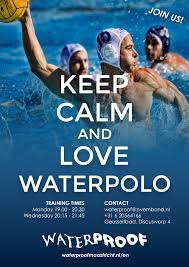

Wat is waterpolo?
 Waterpolo is een teamsport in het water. Met waterpolo is het de bedoeling om de bal in het doel van je tegenstanders te krijgen. een waterpolo team bestaat uit minimaal 8 spelers 3 in de verdediging,3 in de aanval en 1 op het doel. Een wedstrijd waterpolo heeft 4 periodes en de lengte van 1 periode verschilt per leeftijds klasse . De jongste groep (die worden ook wel de mini's genoemd) speel 4 keer 3 minuten. die E jeugd en D jeugd spelen 4 keer 4 minuten. en de C, B, A jeugd, hweren 1 en heren 2 spelen 4 keer 5 minuten. na elke periode heb je 1 minuut rust. na 2 periodes verwissel je van kant. Waterpolo is een best zware sport Desondanks het niet heel lang duurt is het toch best zwaar. Waterpolo is ook een best ruige sport want er gebeurt heel veel onderwater en soms ook boven water wat iemand zou kunnen bleseren. Daarom lopen er ook 2 goed gekeurde Scheidsrechter bij. 1 aan elke kant. je hebt ook 3 mensen nodig die de "tafel" bedienen. de tafel betekend de mensen die de wedstrijd bijhouden. de 1ste voor de scoreboard. de 2de voor alles wat er is gebeurd in de wedstrijd op te schrijven. en de 3de om de 30 seconde klok bij te houden. Er zijn natuurlijk ook veel regels bij waterpolo om het gezellig en leuk te houden voor iederen. En daar zijn die schijdrechters heel belangrijk voor. de reden waarom er 2 zijn is zodat alles goed in de gaten gehouden wordt. 1 van de 2 houdt de linker kant in de gaten en de anderen de rechter kant. Zodat de wedstrijd eerlijk en sportief verloopt. De Scheidsrechters moeten goed gekeurd zijn voor de knzb. dat betekend dat ze de cursus goed afgelegd hebben. bij waterpolo kan je extra protectie gebruiken door een bitje in te doen en een tok aan te trekken.